Staking BLOCK¶
Staking is the Proof-of-Stake equivalent of mining in Proof-of-Work blockchains. Stakers validate transactions on the network. These transactions are grouped in blocks. With Blocknet, there is 1 block every minute with a 1 BLOCK reward. You can stake with any amount of BLOCK and are rewarded for supporting the network with block rewards.
Staking Guide¶
Staking can be performed with any amount of BLOCK, there is no minimum. However, since staking with Blocknet is probability-based, you will receive rewards more frequently by owning and staking more BLOCK. BLOCK can be acquired through various options available.
Use one of the following guides to enable staking and start earning rewards.
Staking from a GUI wallet¶
Stake using the redesigned wallet
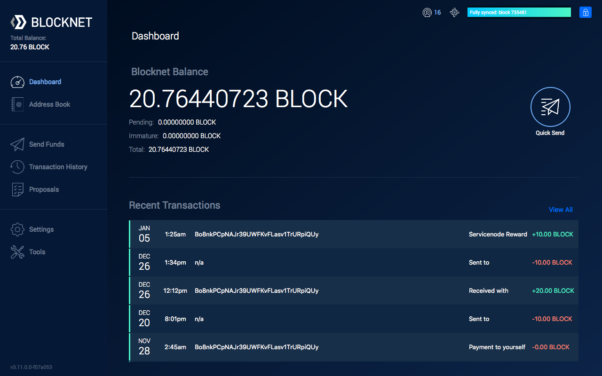
- Install and setup the Blocknet wallet.
- Open and sync the wallet.
- Make sure there's BLOCK in your wallet.
- Unlock the wallet for staking only.
- It may take a minute for the staking to activate.
-
You can verify the wallet is staking with the status icon in the upper-right corner.
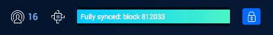
-
The 2nd icon from the left indicates the staking status. If it is grey, staking is inactive. If it is blue, staking is active. You can also hover over the icon to read the staking status.
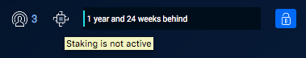
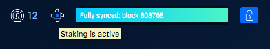
Note: Staking will not activate if the wallet is not synced.
Since staking is the act of confirming the latest transactions, staking cannot be active until the wallet is synced to the more recent transaction on the network.
Note: Newly deposited BLOCK can't stake for 60 minutes.
Funds cannot stake until they have had 60 confirmation on the network. This a security precaution and will take roughly 60 minutes (1 confirmation a minute) to be eligible for staking.
-
-
When staking, you may see your wallet balance show as Immature. This is a normal part of staking. The funds in your wallet that "won" the staking reward will remain immature until they have 101 confirmations (101 minutes). When funds are immature, they are unspendable and do not count towards your probability for receiving another reward. After 101 confirmations, these funds can be spent again and the balance will show up as normal.
Stake using the classic wallet
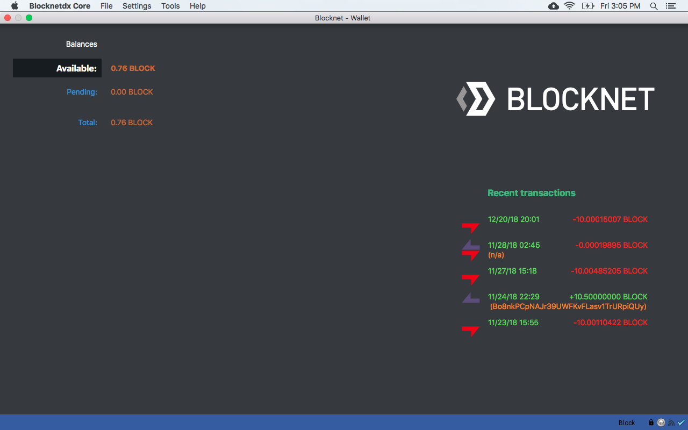
- Install and setup the Blocknet wallet.
- Open and sync the wallet.
- Make sure there's BLOCK in your wallet.
- Unlock the wallet for staking only.
-
It may take a minute for the staking to activate.
Note: Staking will not activate if the wallet is not synced.
Since staking is the act of confirming the latest transactions, staking cannot be active until the wallet is synced to the more recent transaction on the network.
Note: Newly deposited BLOCK can't stake for 60 minutes.
Funds cannot stake until they have had 60 confirmation on the network. This a security precaution and will take roughly 60 minutes (1 confirmation a minute) to be eligible for staking.
-
When staking, you may see your wallet balance show as Immature. This is a normal part of staking. The funds in your wallet that "won" the staking reward will remain immature until they have 101 confirmations (101 minutes). When funds are immature, they are unspendable and do not count towards your probability for receiving another reward. After 101 confirmations, these funds can be spent again and the balance will show up as normal.
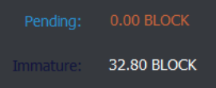
Staking from CLI on a VPS running Ubuntu Linux¶
Warning: If you stake on a Virtual Private Server (VPS), there is some risk your BLOCK could be stolen if your VPS provider turns out to be malicious, or if they carelessly place a malicious actor in a privileged position.
The chances of this may be slim for a well-established, reputable VPS provider, yet they do exist because your wallet's private keys are exposed while staking. The risk of this needs to be weighed by each individual against the convenience of staking 24/7 on a remote VPS. Note, some VPS providers do offer services which enable you to easily create and control the keys used for cryptographic operations. Here is an example of such a service.
Staking from CLI on a Virtual Private Server (VPS) running Ubuntu Linux
Set up an Ubuntu Linux server
If you plan to host a Service Node on the same VPS you'll be using for staking, refer to the Service Node Hardware Requirements to determine the HW requirements of the VPS you choose. Otherwise, the following HW requirements will be sufficient for staking only:
- 1 or more vCPUs
- 20GB or more storage space
- 2GB or more of RAM. (1GB of RAM is sufficient if you create 1+GB of swap space in step 11 below).
Note: The instructions below assume bash shell, the default shell for Ubuntu 20.04.3 LTS Linux, is used. Please adjust as necessary if a different shell is used.
- If you're new to the Linux Command Line Interface (CLI), learn the basics. You don't have to learn every detail, but learn to navigate the file system, move and remove files and directories, and edit text files with vi, vim or nano.
- Sign up for an account at an economical, reliable VPS provider. For example, you may wish to explore services available from VPS providers like Contabo, Digital Ocean, Vultr, Amazon AWS and Google Cloud Computing. A Google search for "VPS hosting provider" will yield a multitude of other options. You'll want to rent and deploy a VPS running Ubuntu 20.04.3 LTS Linux through your VPS provider.
- Follow the guides available from your VPS provider to launch
your Ubuntu VPS and connect to it via
ssh(from Mac or Linux Terminal) or viaPuTTY(from Windows). For example, here is a nice Quick Start Guide from Digital Ocean, and here is a guide from Contabo on connecting to your VPS. - The first time you connect to your VPS, you'll be logged in as
rootuser. Create a new user with the following command, replacing<username>with a username of your choice.You will be prompted for a password. Enter a password foradduser <username><username>, different from your root password, and store it in a safe place. You will also see prompts for user information, but these can be left blank. - Once the new user has been created, add it to the
sudogroup so it can perform commands as root. Only commands/applications run withsudowill run with root privileges. Others run with regular privileges, so type the following command with your<username>usermod -aG sudo <username> - Type
exitat the command prompt to end your Linux session and disconnect from your VPS. - Reconnect to your VPS (via
sshorPuTTY), but this time connect as the<username>you just added.- Using
sshfrom Mac or Linux Terminal:Example:ssh <username>@VPS_IPssh bob@104.22.10.214 - Using
PuTTYfrom Windows, configure PuTTY to use VPS_IP as before, but this time login to your VPS with the<username>andpasswordyou just set.
- Using
- Update list of available packages. (Enter password for
<username>when prompted for the [sudo] password.)sudo apt update - Upgrade the system by installing/upgrading packages.
sudo apt upgrade -
Make sure
nanoandunzippackages are installed.sudo apt install nano unzip- Create at least as much swap space as you have RAM. So,
if you have 16 GB or RAM, you should create at least 16 GB of
swap space. Many recommend creating twice as much swap space as
you have RAM, which is a good idea if you can spare the disk
space. However, more than 16 GB of swap
space may not be required. To create swap space:
Check if your system already has swap space allocated:swapon --show - If the results of
swapon --showlook similar to this:that means you already have some swap space allocated and you should follow this guide to allocate 1x-2x more swap space than you have GB of RAM.swapon --show NAME TYPE SIZE USED PRIO /swapfile file 2G 0B -2 - If the results of
swapon --showdo not indicate that your system has a swapfile of typefile, you'll need to create a new swap file with 1x-2x more swap space than you have GB of RAM. To do so, follow this guide
- Create at least as much swap space as you have RAM. So,
if you have 16 GB or RAM, you should create at least 16 GB of
swap space. Many recommend creating twice as much swap space as
you have RAM, which is a good idea if you can spare the disk
space. However, more than 16 GB of swap
space may not be required. To create swap space:
-
(Highly Recommended) Increase the security of your VPS by setting up SSH Keys to restrict access to your VPS from any computer other than your own. Those connecting via
PuTTYfrom Windows should first follow this guide to set up SSH Keys with PuTTY. Note: If you follow this recommendation to restrict access to your VPS via SSH Keys, back up your SSH Private key and save the password you choose to unlock your SSH Private Key.Set up staking
- Visit https://github.com/blocknetdx/blocknet/releases/ to see
the latest release version of the Blocknet core wallet:
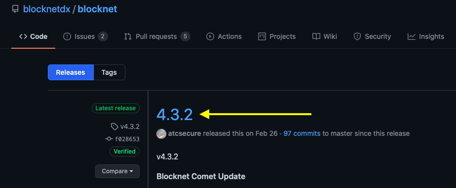
- As shown in the image above, the latest release version at this
time is
4.3.3. - If there is a "v" before the release version number, ignore it; do not prepend "v" to the BLOCKNET_VERSION you specify in the next step.
- As shown in the image above, the latest release version at this
time is
- Create some aliases for easy access to the Blocknet wallet
daemon and Blocknet wallet CLI.
- Use a text editor like
vi
or
nano
to edit your
~/.bashrcfile. Examples:vi ~/.bashrcnano ~/.bashrc
- Look for the following 3 lines within
~/.bashrc:if [ -f ~/.bash_aliases ]; then . ~/.bash_aliases fi - If those 3 lines are not already in your
~/.bashrcfile, add them, then save the file and exit the editor. - Edit
~/.bash_aliases. (Create a new one if it doesn't exist.) - Copy/Paste the following variable and alias definitions
into
~/.bash_aliases, replacing4.3.3with the latest version of the Blocknet core wallet. (If upgrading from an old version, simply set BLOCKNET_VERSION to the latest version and don't bother changing the alias statements if they are already there from a previous installation.):export BLOCKNET_VERSION='4.3.3' # blocknet-daemon = Start Blocknet daemon for staking wallet alias blocknet-daemon='~/blocknet-${BLOCKNET_VERSION}/bin/blocknetd -daemon' # blocknet-cli = Staking wallet Command Line Interface alias blocknet-cli='~/blocknet-${BLOCKNET_VERSION}/bin/blocknet-cli' # blocknet-unlock = Unlock staking wallet for staking only alias blocknet-unlock='~/blocknet-${BLOCKNET_VERSION}/bin/blocknet-cli walletpassphrase "$(read -sp "Enter Password:" undo; echo $undo;undo=)" 9999999999 true' # blocknet-unlockfull = Unlock staking wallet fully alias blocknet-unlockfull='~/blocknet-${BLOCKNET_VERSION}/bin/blocknet-cli walletpassphrase "$(read -sp "Enter Password:" undo; echo $undo;undo=)" 9999999999 false' - Save your edits to
~/.bash_aliases, exit the editor and type the following to activate all the aliases you just defined:source ~/.bash_aliases - To confirm all your new aliases have been set, type
alias. It should show you a list of all your current aliases, including all you just added.
- Use a text editor like
vi
or
nano
to edit your
- Copy/Paste the following sequence of commands to download and unpack
the latest version of the Blocknet core wallet:
- Change Directory to home directory.
cd ~ - Download the latest Blocknet wallet:
wget https://github.com/blocknetdx/blocknet/releases/download/v${BLOCKNET_VERSION}/blocknet-${BLOCKNET_VERSION}-x86_64-linux-gnu.tar.gz - Unpack the download:
tar xzvf blocknet-${BLOCKNET_VERSION}-x86_64-linux-gnu.tar.gz - (Recommended) Remove the download package:
rm blocknet-${BLOCKNET_VERSION}-x86_64-linux-gnu.tar.gz
- Change Directory to home directory.
- Start the Blocknet daemon using the
blocknet-daemonalias you defined above. The first time the Blocknet daemon is started, it creates the Blocknet data directory,~/.blocknet:blocknet-daemon -
Without waiting for the wallet to sync, stop the Blocknet daemon using the
blocknet-clialias you defined above:blocknet-cli stop -
To save 3.5+ hours of time in syncing, it's recommended to use the bootstrap method to speed up syncing:
- Remove existing
blocks,chainstate&indexesdirectories from the blocknet data directory:rm -rf ~/.blocknet/{blocks,chainstate,indexes} - Get the latest bootstrap file:
wget https://utils.blocknet.org/Blocknet.zip - Unzip the bootstrap file:
unzip Blocknet.zip - Move the required directories to the blocknet data directory:
mv Blocknet/{blocks,chainstate,indexes} ~/.blocknet/ - Clean up. Remove useless directories & files:
rmdir Blocknet/ rm Blocknet.zip
- Remove existing
-
Restart the Blocknet daemon:
blocknet-daemon -
Issue the command
blocknet-cli getblockcountevery 5 minutes or so until the command stops returning error messages and returns a block height which matches that of Chainz Blockchain Explorer. (Check the block height much less frequently if you did not speed up syncing with the bootstrap method of step 6.) -
At this point, the latest Blocknet wallet is installed and fully synced. Now you can interact with the Blocknet daemon through the Command Line Interface (CLI) as follows:
The following are examples of commands you can issue to the Blocknet daemon through the CLI:
Note: Some of the Blocknet CLI commands take parameters. In the last example above, <height> represents a number to be passed to theblocknet-cli getblockchaininfo blocknet-cli getstakingstatus blocknet-cli getblockcount blocknet-cli getblockhash <height>getblockhashcommand as a parameter. To see a full list of all the Blocknet CLI commands, type:To learn the details about what a command does and how to use it, type:blocknet-cli help...where <command> is the command you want to learn about. For example, the following will give full details on the function and use of theblocknet-cli help <command>getnewaddresscommand:You can also find the same details about all available Blocknet commands at the Blocknet API Portal.blocknet-cli help getnewaddress -
Fund your staking wallet. Skip to step 11 if you don't have an already funded Blocknet wallet, or if you prefer to fund your VPS staking wallet by sending funds to it instead of importing an already funded wallet. Otherwise, import an already funded Blocknet wallet from your home computer to your VPS as follows.:
- Stop the Blocknet daemon on your VPS with the following
command:
blocknet-cli stop - Make space for the funded
wallet.datto be imported to your VPS by renaming the emptywallet.dattowallet.dat.empty:mv ~/.blocknet/wallets/wallet.dat{,.empty} - Assuming you backed up your
Blocknet wallet on your home computer, you'll know where to
find your funded
wallet.datfile. Reference the Backup & Restore Guide to locate your fundedwallet.dat. -
On your home computer, use scp (Mac or Linux) or pscp (Windows) to copy your funded
wallet.datfile to your VPS:-
Mac Terminal (assuming the funded
wallet.datis in the standard place):...where <username> is the name of the user you created on your VPS and VPS_IP is the IP address of your VPS.cd ~/Library/Application\ Support/Blocknet/wallets scp wallet.dat <username>@VPS_IP:.blocknet/wallets -
Linux Terminal (assuming the funded
wallet.datis in the standard place):...where <username> is the name of the user you created on your VPS and VPS_IP is the IP address of your VPS.cd ~/.blocknet/wallets scp wallet.dat <username>@VPS_IP:.blocknet/wallets -
Windows Command Prompt Terminal (assuming the funded
wallet.datis in the standard place).-
Copy your funded
wallet.datto your VPS as follows:...where <username> is the name of the user you created on your VPS and VPS_IP is the IP address of your VPS.cd %appdata%\Blocknet\wallets pscp wallet.dat <username>@VPS_IP:.blocknet/wallets
-
-
Restart the Blocknet daemon on your VPS with the following command:
blocknet-daemon
Note: It is not necessary to delete, remove, uninstall or stop using the Blocknet wallet on your home computer just because you imported your home computer's
wallet.datto your staking VPS. Read more...You can access the same Blocknet wallet on your home computer that is staking on your VPS. For example, if you've imported the
wallet.datfrom your home computer to your VPS, you can still access the samewallet.daton your home computer to send & receive funds, or to trade BLOCK on BlockDX. The only thing you have to be careful not to do is to import private key(s) into onewallet.datand not the other. If you absolutely must import private keys to the wallet on your home computer, for example, then you should either import the same private keys to the wallet on your VPS, or stop the wallet on your VPS and re-import thewallet.datfrom your home computer so your VPS wallet will also have the imported private keys. Note, if you've imported private keys, it's recommended to use Coin Control to send the imported keys/addresses to an address in your wallet which is part of the HD wallet hierarchy of addresses associated with your wallet (i.e. send them to an address generated from within your wallet). If you do this, you don't have to import the same private key(s) to both your home computer and your VPS wallets, and you don't have to re-import thewallet.datfrom your home computer to your VPS. - Stop the Blocknet daemon on your VPS with the following
command:
-
If you don't have an already funded Blocknet wallet, or you prefer to fund your VPS staking wallet by sending funds to it instead of importing an already funded wallet:
- Encrypt your VPS wallet using the
encryptwalletcommand. Get details on how to use theencryptwalletcommand by typing:blocknet-cli help encryptwallet - Back up your VPS Blocknet wallet. Hint:
Use
scp
(Mac or Linux) or
pscp
(Windows) to copy your
wallet.datand/or thedumpfileof your wallet's Private Keys from your VPS to another computer. - Use the
getnewaddresscommand to get an address in your VPS Blocknet wallet to which you can send BLOCK. Get details on how to use thegetnewaddresscommand by typing:blocknet-cli help getnewaddress - Fund your VPS Blocknet wallet by sending BLOCK to the address
you got from issuing the
getnewaddresscommand.
- Encrypt your VPS wallet using the
-
At this point, you should have a fully funded staking wallet running on your VPS. The last step is to unlock your VPS wallet for staking. To unlock your wallet for staking only, issue the command:
When prompted, enter your wallet passphrase to unlock your wallet for staking only. (Your wallet passphrase is the passphrase you specified when you encrypted the wallet.) To see what theblocknet-unlockblocknet-unlockalias does, typealias blocknet-unlock. It should show you this command:The parameters of this command are as follows:alias blocknet-unlock='~/blocknet-${BLOCKNET_VERSION}/bin/blocknet-cli walletpassphrase "$(read -sp "Enter Password:" undo; echo $undo;undo=)" 9999999999 true'"$(read -sp "Enter Wallet Passphrase:" undo; echo $undo;undo=)"This parameter uses a special bash shell trick which prompts the user for a passphrase and inserts that passphrase as a parameter without recording it in the.bash_historyfile. (Recording your passphrase in the.bash_historyfile would be a security risk.)9999999999This parameter is the number of seconds you want your wallet to remain unlocked for staking. Do not use a larger number than this; it will fail to unlock your wallet if you attempt to use a larger number.trueThis parameter tells thewalletpassphrasecommand to unlock for staking only; don't unlock the wallet fully, which would be a security risk.
-
Confirm your wallet is staking by issuing the command:
When this command returns,blocknet-cli getstakingstatus"status": "Staking is active", then you know your wallet is staking properly. Note, you may also want to confirm your staking wallet balance is correct with:blocknet-cli getbalance -
Whenever a new version of the Blocknet wallet is released, upgrade your staking wallet to the latest version by following these steps:
- Stop the Blocknet daemon:
blocknet-cli stop - Follow steps 1 through 4 under Set up staking above to install the latest version of the Blocknet wallet and start the new Blocknet daemon.
- Unlock your wallet for staking with:
blocknet-unlock - Confirm your wallet is staking as in step 13 above.
- (Recommended) Remove the directory tree of the old
version. Use caution with this command; it recursively
removes all files and directories in the specified
directory tree:
...where
rm -ri ~/blocknet-x.y.zx.y.zrepresents the old version number. Experienced Linux users can use:...which does not request confirmation before removing all directories and files in the specified directory tree.rm -r ~/blocknet-x.y.z
- Stop the Blocknet daemon:
- Visit https://github.com/blocknetdx/blocknet/releases/ to see
the latest release version of the Blocknet core wallet:
Orphaned Stakes¶
While staking, you may occasionally see a red flag next to one of your stake hits, like this:
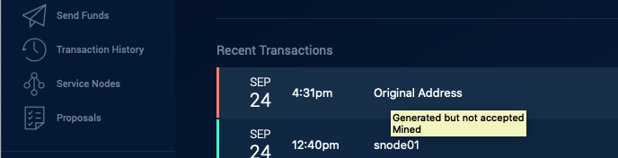
If you hover the mouse over the text of the red/orphaned block, it will display the text, "Generated but not accepted."
The occasional appearance of a red/orphaned block is normal and nothing to be concerned about. An orphan happens when another block beats your staking node, which generally happens because the staker who won that block was able to get the winning block out to more nodes before your node.
If, however, you notice a large number of red/orphaned blocks happening in a short time period, like 5 or more per day, it could mean your staking wallet is on a fork.. If you determine your staking wallet is on a fork, follow the instructions in the Fork Management Guide to get your wallet back on the correct chain.
If your staking wallet is not on a fork, but still producing more red/orphaned blocks than you like, here are some possible causes and ideas to reduce the number of orphaned blocks seen by your staking wallet:
- Your staking wallet doesn't have
listen=1set in itsblocknet.conffile (located in the Data Directory). If you need to addlisten=1to yourblocknet.conf, stop your wallet, make the change, then restart your wallet. - Your staking wallet doesn't have its P2P port (41412 by default) open to the external world and forwarding to your blocknet wallet. You can check if your wallet's P2P port is open to the external world using this tool.
Maximizing Staking Rewards:¶
Peer Connections¶
Some stakers believe they receive more staking rewards when they have more peers connected to their wallet. If you want to test this theory, you can manually add peers to your wallet by following the instructions found here.
Dividing funds into optimally sized UTXOs¶
If we look at the history of which sizes of UTXOs/Inputs have been receiving the most staking rewards, we might be inspired to create UTXOs in our staking wallet of those same sizes. To view the sizes of UTXOs which recently got the most rewards (a.k.a. "stake hits"):
- Visit Blocknet Extraction.
- Scroll to the bottom and you'll see the "Stake Input Size for the last 1000 blocks" represented as blue dots on the chart:
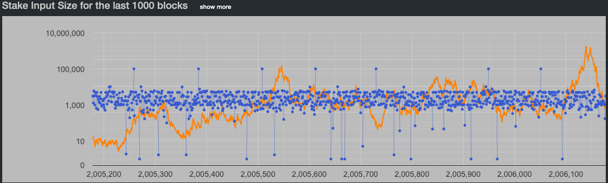
- If you like, you can click show more to see more blue dots:
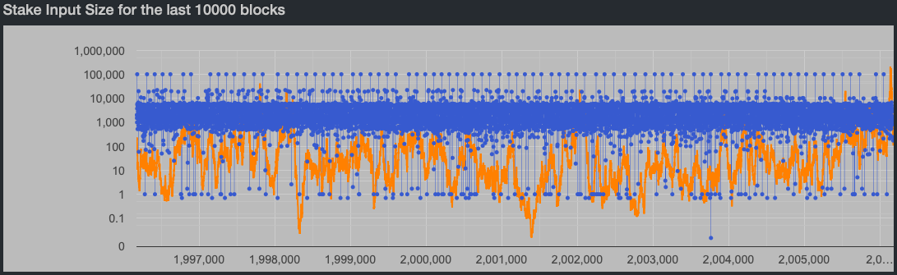
As you can see, the UTXOs receiving the most stake hits are the ones with somewhere between 500 and 5,000 BLOCK (the range where the blue dots are most concentrated). So, making UTXO sized in that range may help to maximize stake hits.
One way to organize UTXO sizes is to use Coin Control when sending BLOCK to yourself. This allows you to select from which UTXOs your BLOCK is sent. Note, you'll probably want to check the Subtract fee from total box when sending from a specific set of UTXOs so you don't get an "Insufficient Funds" error:
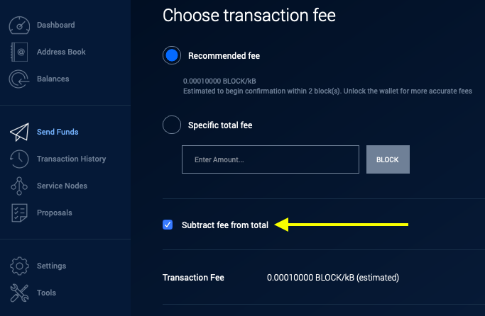
An even more convenient way to split your wallet balance into UTXOs of the desired size is the following:
- Send your entire wallet balance to one address in your wallet. When doing this, be sure to check the Subtract fee from total box, as shown above, so you don't get an "Insufficient Funds" error.
- Issue the
splitbalancecommand from Tools->Debug Console (or from CLI):where amount is the size of the UTXOs into which you want to split your balance, and address is the address to which you sent all your block in step 1 above. For example, if a wallet has 5000 block at address XYZ, thensplitbalance amount addresssplitbalance 1000 XYZwill result in address XYZ containing 5 UTXOs of 1000 block each. (In most cases, the amount being split will not be exactly divisible by amount you specify in thesplitbalancecommand. The remainder will be sent to a change address).
Troubleshooting
If you encounter issues, please join Blocknet's Discord and ask a question in the #support channel.
Warning: Beware of scams
Be cautious of users sending you private messages on Discord to help with troubleshooting, even if they claim to be team members. Scammers will often prey on those having issues and offer help in an attempt to steal funds. This is usually done by impersonating team members.
Staking Rewards¶
Probability¶
The selection of the staker that confirms each block is probability-based. This means that everyone’s chance of being selected to confirm the next block is equal to the amount of BLOCK staking divided by the total amount of BLOCK being staked on the network. The amount of staked BLOCK on the network can be seen here. The value will have to be calculated by totaling each amount.
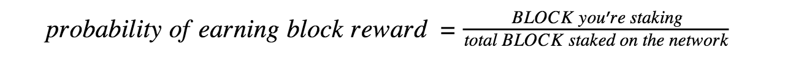
Example: Calculating staking reward probability.
Assume:
- You're staking 5000 BLOCK
- There's a total of 3,325,000 BLOCK staking on the network
The probability you will earn the next reward is:
5000 / 3325000 = 0.0015 * 100 = 0.15%
This means that, on average, you will earn a reward every:
1 / 0.0015 = 665 minutes = 11.08 hours
And the average amount of BLOCK rewarded per day is:
1440 minutes a day / 665 minutes per reward * 1 BLOCK per reward = 2.16 BLOCK
With BLOCK valued at $50, that would equate to $108 per day and $39,420 per year.
ROI¶
Building off the probabilistic ratio above, the following equation can be derived to estimate the yearly return (in BLOCK) on the initial amount started with. This does not account for compounding, which would increase this value. The amount of staked BLOCK on the network can be seen here. The value will have to be calculated by totaling each amount.
Staking ROI = ( [525600] / [total BLOCK staked on the network] ) * 100
- 525600 = 1 BLOCK reward per minute * 1440 minutes per day * 365 days per year
Example: Calculating staking reward ROI.
Assume:
- There's a total of 3,325,000 BLOCK staking on the network
- The amount you're staking is irrelevant because ROI is a per unit value
The yearly ROI under these conditions will be:
525600 / 3325000 = 0.158 * 100 = 15.8%
This means that in a year, if you staked 1000 BLOCK the rewards would be:
1000 * 0.158 = 158 BLOCK
With BLOCK valued at $50, that would equate to $7,900 per year.